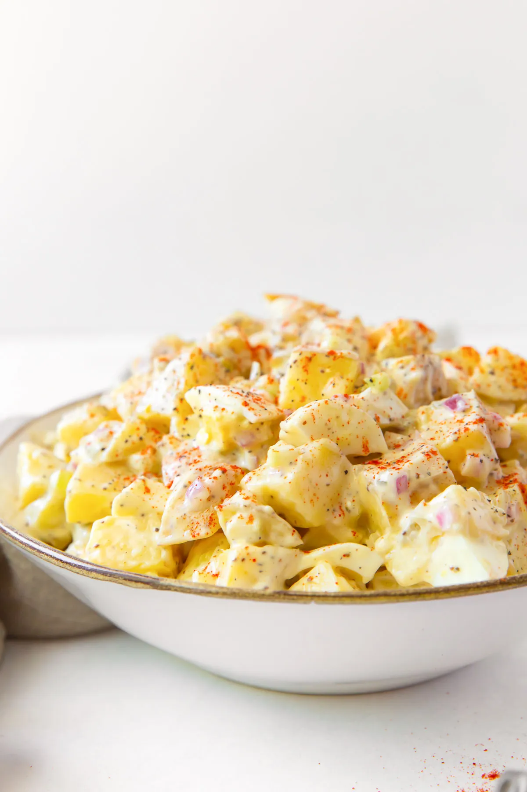

Potato Salad
Potato Salad Recipe

INGREDIENTS
Yukon Gold Potatoes
Mayonnaise
Sweet Pickle Relish
Apple Cider Vinegar
Dijon Mustard
Salt and Pepper
Celery Seed
STEP BY STEPS
Boil the potatoes in salted water until they are just tender when pierced with a fork. Don’t overcook the potatoes or they may fall apart.
Drain the potatoes well and let them cool for at least 20 minutes.
While the potatoes cool, mix together the dressing ingredients.
Stir the dressing into the cooled potatoes.
Gently stir in the chopped celery, red onion and coarsely chopped hard boiled eggs.
Season with additional salt and pepper, to taste.
Chill before serving. Serve garnished with paprika, if desired.
Back To Home